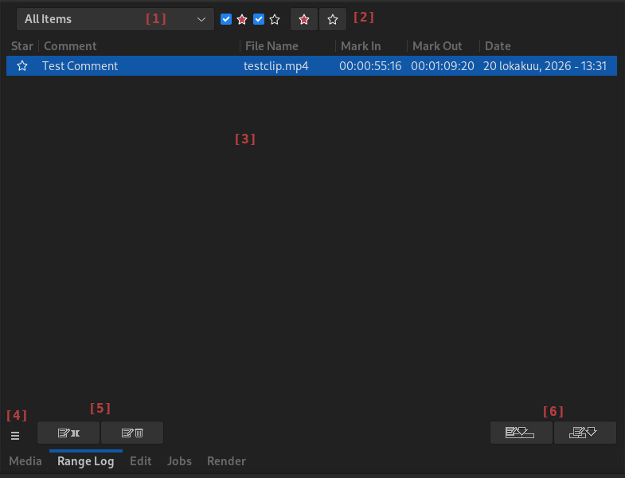

Range Log
Flowblade provides functionality to save, name and manage in point to out point ranges of media items.
Rationale
This functionality is mainly useful then there are media items that contain multiple areas of interest or if the user wants to save in and out points of an edit for later use.A typical example use case for the feature would be:
- User has a long clip of a speech delivered at some social function, congress, company event, etc.
- User wants to mark and name the interesting parts of the speech
GUI

[1] Group Select dropdown menu.
[2] Star Controls Left to right: Show starred, Show non-starred, Set selected starred, Clear star from selected.
[3] Range Log Items Table.
[4] Range Log Panel Menu.
[5] Items Buttons Left to right: Create Item, Delete Item.
[6] Timeline Buttons Left to right: Insert Selected, Append Displayed.
Creating Range Log Items
With Clip Monitor
- Add Media Item to Clip Monitor
- Set Mark In and Mark Out points
- Press [5] Create Item button.
Drag'n'Drop from Timeline
- Drag a Clip from Timeline on top of Items list view in the Range Log panel
Adding Range Log items to Timeline
With buttons
- Press [6] Append Displayed button to append all Items as Clips on active Track
- Press [6] Insert Selected button to insert all selected Items on active track at nearest cut from the currently displayed Timeline position.
Drag'n'Drop into Timeline
- Select a Range Log item and drag it into the desired position on Timeline
Managing Range Log Items
- Use [1] dropdown menu to select the displayed Items Group.
- Use [2] Star Controls to star and unstar items, and selected filtered views based on if items are starred or not.
- Use [4] Panel Menu to create, rename and delete Items Groups, move items between groups and to select displayed sorting by item creation time, clip name or comment.